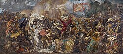

Bitwa pod Grunwaldem (zwana w języku niemieckim pierwszą bitwą pod Tannenbergiem „Schlacht bei Tannenberg”, a w języku litewskim bitwą pod Żalgirisem „Žalgirio mūšis”) – jedna z największych bitew w historii średniowiecznej Europy (pod względem liczby uczestników)[3], stoczona na polach pod Grunwaldem 15 lipca 1410 roku, w czasie trwania wielkiej wojny między siłami zakonu krzyżackiego, wspomaganego przez rycerstwo zachodnioeuropejskie (głównie z Czech, z wielu księstw śląskich, z Pomorza Zachodniego i z pozostałych państw Świętego Cesarstwa Rzymskiego) pod dowództwem wielkiego mistrza Ulricha von Jungingena, a połączonymi siłami polskimi i litewskimi (złożonymi głównie z Polaków, Litwinów i Rusinów) oraz niewielkich wojsk tatarskich wspieranymi lennikami obu tych krajów (Hospodarstwo Mołdawskie, księstwo mazowieckie, księstwo płockie, księstwo bełskie, Podole i litewskie lenna na Rusi) oraz najemnikami z Czech, Moraw i z księstw Śląska oraz uciekinierami ze Złotej Ordy[4] i chorągwiami prywatnymi (między innymi chorągiew z Nowogrodu Wielkiego księcia Lingwena Semena), pod dowództwem króla Polski Władysława II Jagiełły i wielkiego księcia litewskiego Witolda.

Malaż bitwy
Bitwa ta zakończyła się zwycięstwem wojsk polsko-litewskich i pogromem sił krzyżackich, nie została jednak wykorzystana do całkowitego zniszczenia zakonu. Nie zdobyto Malborka – stolicy Zakonu – ponieważ wygasał rozejm Witolda z inflancką gałęzią Zakonu na północy (korzystny w czasie bitwy) i wojska litewskie rozpoczęły odwrót[5], niepewna była także sytuacja na południowych granicach Królestwa, zagrożonych atakiem przez ówczesnego sojusznika Zakonu, węgierskiego króla Zygmunta Luksemburczyka. Pomimo poddawania się wojskom królewskim przez pruskie miasta (Olsztynek, Morąg, Dzierzgoń, Główne Miasto Gdańsk, Stare Miasto Toruń, Chełmno, Elbląg), obrońca Malborka, komtur Świecia Henryk von Plauen, miał w dyspozycji jeszcze ponad 200 czynnych braci rycerzy oraz 362 komturie zakonne rozsiane po całej Europie, do których słał listy o pomoc. Marsz wojska dowodzonego przez Jagiełłę na Malbork był powolny[6]. Do 22 lipca 1410 roku – kiedy to pod Malbork dotarły pierwsze oddziały armii polsko-litewskiej – zamek w Malborku był już gotowy do obrony, a jego oblężenie okazało się nieskuteczne. Okres ten kończy zwycięska bitwa rycerstwa polskiego pod Koronowem i I pokój toruński[7].